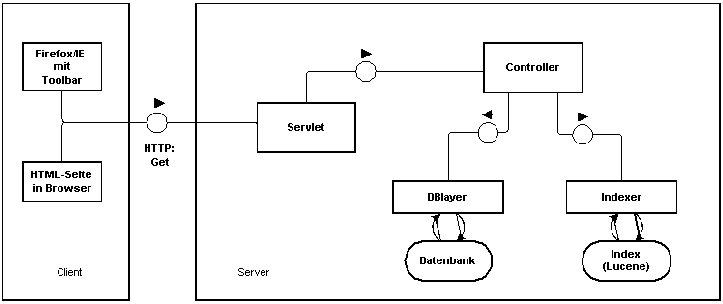

Architektur
In diesem Kapitel soll ein Einblick in den Aufbau des Servers gegeben werden.
Die Abbildung 2.1 gibt einen groben Überblick über Komponenten des Servers.
In den folgenden Sektionen werden dann einzelne Komponenten näher erläutert.
Abbildung 2.1:
grobe ServerArchitektur
|  |
Unterabschnitte
Jan Kechel
2006-04-28